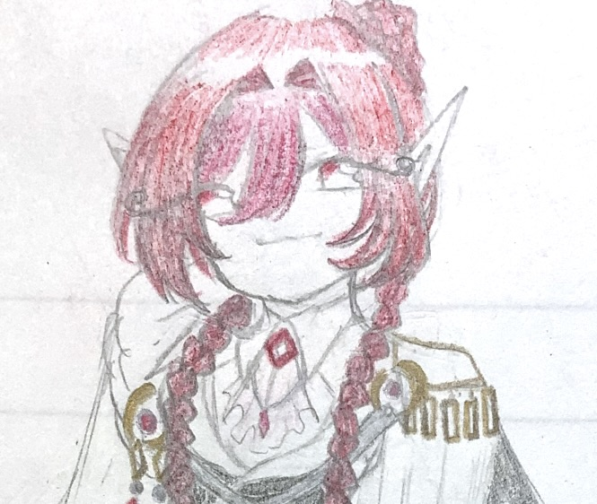
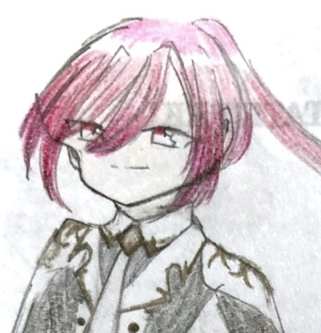
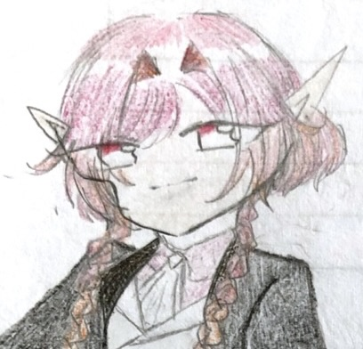

悪魔種
toifel

フェル
悪魔神。美しい者好き。逆に美しくないとすぐ捨てる。いろんなところで喧嘩ふっかけてきたので、あまり種族同士仲良いところが少ない。

イサギ
レイヤの兄。体が弱く、基本的には行政の方を担当している。レイヤのことを気にかけている。

レイヤ
イサギの妹。悪魔神の末裔。四人兄弟の末っ子。父から男として生きるように強いられてきたため、女の子らしいことに憧れを抱いている。